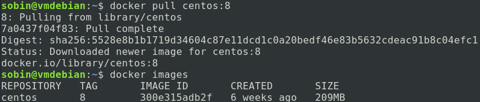

Because Hadoop is software designed for clusters, when learning to use it, we inevitably encounter situations where Hadoop must be configured on multiple computers. This creates many obstacles for learners, mainly two:
- Expensive computer clusters. A cluster environment composed of multiple computers requires expensive hardware.
- Difficult to deploy and maintain. Deploying the same software environment on many computers is a large amount of work, and it is very inflexible, making it difficult to redeploy after environment changes.
To solve these problems, we have a very mature approach.Docker。
Docker is a container management system that can run multiple "virtual machines" (containers) like a virtual machine and form a cluster. Because a virtual machine fully virtualizes a computer, it consumes a large amount of hardware resources and is inefficient, whereas Docker only provides an independent, reproducible runtime environment. In fact, all processes in a container are still executed in the host's kernel, so its efficiency is almost the same as processes on the host (close to 100%).
This tutorial will use Docker as the underlying environment to describe the use of Hadoop. If you don't know how to use Docker and don't know a better way, please learnDocker Tutorial。
Docker Installation on Windows
Note:Windows users are advised to use a virtual machine solution to install Docker.
Docker Deployment
After entering the Docker command line, pull a Linux image as the environment for running Hadoop. Here, the CentOS image is recommended (Debian and other images may have some problems for now).
docker pull centos:8
Then usedocker imagescommand to view the current local images:

Now, let's create a container:
docker run -d centos:8 /usr/sbin/init
Throughdocker psyou can view the running containers:

We can make the container print out Hello World:

At this point, it shows that Docker has been installed and deployed successfully.
Create Container
Hadoop supports running on a single device, mainly in two modes: standalone mode and pseudo-cluster mode.
This chapter describes Hadoop installation and standalone mode.
Configure Java and SSH Environment
Now create a container named java_ssh_proto to configure an environment containing Java and SSH:
docker run -d --name=java_ssh_proto --privileged centos:8 /usr/sbin/init
Then enter the container:
docker exec -it java_ssh_proto bash

Configure the image:
sed -e 's|^mirrorlist=|#mirrorlist=|g' \
-e 's|^#baseurl=http://mirror.centos.org/$contentdir|baseurl=https://mirrors.ustc.edu.cn/centos|g' \
-i.bak \
/etc/yum.repos.d/CentOS-Stream-AppStream.repo \
/etc/yum.repos.d/CentOS-Stream-BaseOS.repo \
/etc/yum.repos.d/CentOS-Stream-Extras.repo \
/etc/yum.repos.d/CentOS-Stream-PowerTools.repo
Install OpenJDK 8 and SSH service:
yum install -y java-1.8.0-openjdk-devel openssh-clients openssh-server
Then enable the SSH service:
systemctl enable sshd && systemctl start sshd
If it is an Ubuntu system, use the following command to start the SSH service:
systemctl enable ssh && systemctl start ssh
Up to this point, if no problems occur, a prototype container containing the Java runtime environment and SSH environment has been created. This is a very key container. It is recommended to first exit the container with the exit command, then run the following two commands to stop the container and save it as an image named java_ssh:
docker stop java_ssh_proto docker commit java_ssh_proto java_ssh
Hadoop Installation
Download Hadoop
Hadoop official website address:http://hadoop.apache.org/
Hadoop distribution download:https://hadoop.apache.org/releases.html
In current tests, versions 3.1.x and 3.2.x have better compatibility. This tutorial uses version 3.1.4 as an example.
Hadoop 3.1.4 mirror address. Download the tar.gz archive file and keep it for later.
Create a Hadoop Standalone Container
Now create a container hadoop_single using the previously saved java_ssh image:
docker run -d --name=hadoop_single --privileged java_ssh /usr/sbin/init
Copy the downloaded Hadoop archive to the /root directory in the container:
docker cp <你存放hadoop压缩包的路径> hadoop_single:/root/
Enter the container:
docker exec -it hadoop_single bash
Enter the /root directory:
cd /root
The hadoop-x.x.x.tar.gz file copied just now should be stored here. Now unzip it:
tar -zxf hadoop-3.1.4.tar.gz
After decompression, you will get a folder hadoop-3.1.4. Now copy it to a common location:
mv hadoop-3.1.4 /usr/local/hadoop
Then configure the environment variables:
echo "export HADOOP_HOME=/usr/local/hadoop" >> /etc/bashrc echo "export PATH=$PATH:$HADOOP_HOME/bin:$HADOOP_HOME/sbin" >> /etc/bashrc
Then exit the Docker container and re-enter.
At this point, the result of echo $HADOOP_HOME should be /usr/local/hadoop
echo "export JAVA_HOME=/usr" >> $HADOOP_HOME/etc/hadoop/hadoop-env.sh echo "export HADOOP_HOME=/usr/local/hadoop" >> $HADOOP_HOME/etc/hadoop/hadoop-env.sh
These two steps configure Hadoop's built-in environment variables. Then execute the following command to determine whether it is successful:
hadoop version

At this point, it means your Hadoop standalone version has been successfully configured.